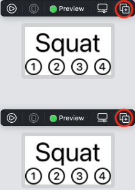
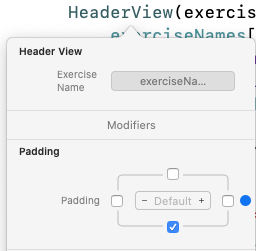
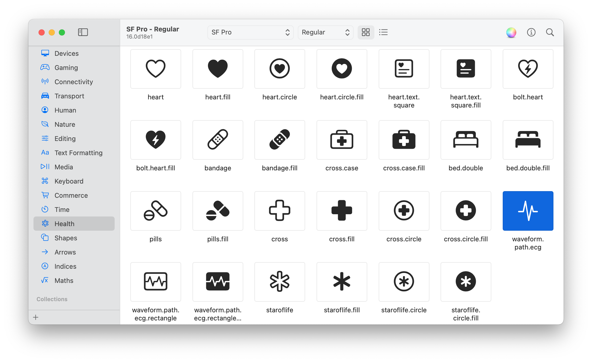

第3章：主视图的原型设计¶
现在是有趣的部分! 在本章中，你将开始创建你的应用程序的原型，它有四个全屏视图：
- Welcome
- Exercise
- History
- Success
创建练习视图¶
你将从布置Exercise视图开始，因为它包含最多的子视图。下面是用户在这个视图中看到的内容。
- 视图的顶部是标题和页码，底部是
History按钮。 - 页码表示有四个编号的页面。
- 练习视图包含一个视频播放器、一个计时器、一个
Start/Done按钮和评级符号。
而这里的列表被改写成了子视图的列表：
- 带有页码的页眉
- Video player
- Timer
- Start/Done按钮
- Rating
- History按钮
你可以在Sketch或Figma这样的应用程序中绘制屏幕草图，然后再将设计转化为SwiftUI视图。但是SwiftUI使得直接在你的项目中布置视图变得很容易，所以这就是你要做的。
SwiftUI的魅力在于它的声明性。你只需声明你想显示的视图，按照你希望它们出现的顺序。如果你创建过网页，这也是一种类似的体验。
练习视图的大纲¶
➤ 继续上一章的项目，或者打开本章起始文件夹中的项目。
在这个视图中，有很多事情要做，所以你将从创建一个带有占位符的Text视图的大纲开始。
➤ 打开ExerciseView.swift。
➤ 画布预览默认使用运行目标的模拟设备。你将从为HIITFit的iPad版本铺设界面开始，所以选择一个iPad模拟器：
➤ 如果iPad不适合在画布上，请放大：
➤ ExerciseView有六个子视图，所以复制Text(exerciseNames[index])视图，然后编辑参数 - 在代码中或在画布中 - 创建这个列表：
VStack {
Text(exerciseNames[index])
Text("Video player")
Text("Timer")
Text("Start/Done button")
Text("Rating")
Text("History button")
}
第一个Text视图是页眉视图的起点。你将在他们自己的文件中创建标题和评价视图。视频播放器、计时器和按钮是简单的视图，所以你将直接在ExerciseView中创建它们。
创建页眉视图¶
本节将学习的技能：使用属性检查器或自动建议修改视图；带有内部和外部参数名称的方法签名；使用SF符号；图像视图；提取和配置子视图；使用预览。
你将通过向ExerciseView添加代码来创建这个头视图，然后你将把它作为一个子视图提取出来，并把它移到自己的文件中。
➤ 为了给后面的提取做准备，把第一个Text视图嵌入到VStack中。按住命令键，点击Text(exerciseNames[index])，然后选择嵌入VStack：
Note
这个版本的命令点击菜单只在画布打开时出现。如果你没有看到嵌入VStack的选项，按Option-Command-Return来打开画布。
现在这个Text视图是在一个VStack里面：
VStack {
Text(exerciseNames[index])
}
修改视图的多种方法¶
➤ 在画布中，选择Squat Text视图。要打开属性检查器，单击工具栏中的检查器按钮，然后选择属性检查器：
这个检查器有最常用的修改器部分：Font、Padding和Frame。你可以从Font ▸ Font菜单中选择一个字体大小，但这次你将使用搜索栏。这是一种更通用的添加修改器的方法。
➤ 在添加修饰符字段中单击，然后输入字体并从菜单中选择字体：
Squat的字体大小在画布和代码中都有变化：
.font(.title)
➤ Xcode建议字体大小为title，但这只是一个占位符。要accept这个值，请单击.title，然后按回车键将其设置为该值。
Note
Xcode和SwiftUI在自动建议或默认一个可能是你想要的选项方面做得很好。
➤ 要查看其他选项，可以用Control-Option-click font或title。这将打开font修改器的弹出式属性检查器。在字体部分，单击选定的字体选项标题以查看字体菜单：
➤ 从菜单中选择大标题。现在，Squat变得更大了!
Note
将修改器放在自己的一行是SwiftUI的惯例。一个视图通常有几个修改器，每个都在自己的一行。这样就可以很容易地将一个修改器向上或向下移动，因为有时顺序是有区别的。
➤ 这里有另一种方法可以看到font菜单。选择.largeTitle并用.替换它 - Xcode 的标准自动建议机制列出了可能的值：
➤ 从菜单中选择largeTitle。
➤ 一旦你熟悉了SwiftUI修改器，你可能更喜欢直接输入。删除.font(.largeTitle)并输入.font。Xcode自动推荐了两个font方法：
➤ 选择其中一个方法，Xcode自动完成了(.title)。将其改为.largeTitle。
Swift
方法签名func font(_ font: Font?) -> Text表明这个方法接受一个Font?类型的参数并返回一个Text视图。_意味着没有外部参数名--你用font(.title)调用它，而不是用font(font: .title)。
创建页码¶
除了练习的名称外，页眉应该显示页码，并突出显示当前页码。这取代了TabView的索引点。
你可以只显示Text("1"), Text("2")，以此类推，但苹果公司提供了大量可配置的图标作为SF符号。
➤ SF符号应用程序是查看和搜索集合的最佳方式。从apple.co/3hWxn3G下载并安装它。有些符号必须只用于特定的苹果产品，如FaceTime或AirPods。你可以在sfsymbols.com检查符号的限制。
➤ 安装SF符号应用程序后，打开它并选择指数类别。向下滚动到数字：
你可以选择白色背景上的黑色数字，或者反过来，以圆形或方形的方式。填充版是表示当前页面的好选择，其他页面的数字不需要填充。
➤ SF符号名称可能很长，但从应用程序中复制它们很容易。选择一个符号，然后打开应用程序的编辑菜单：
Note
键盘快捷键是Shift-Command-C。
➤ 选择无填充的1.circle符号，按Shift-Command-C，然后用名称在标题Text下面添加这行代码：
Image(systemName: "1.circle")
Image是另一个内置的SwiftUI视图，它有一个初始化器，将SF符号名称作为一个String。
➤ 在添加更多的数字之前，命令点击这个Image将其嵌入到一个HStack中，所以数字会并排出现。然后复制和编辑更多的Image视图，以创建其他三个数字：
HStack {
Image(systemName: "1.circle")
Image(systemName: "2.circle")
Image(systemName: "3.circle")
Image(systemName: "4.circle")
}
这是你的页眉：
页码看起来太小了。因为SF符号被集成到旧金山系统字体中--这就是SF符号中的SF--你可以把它们当作文本，用font来指定它们的大小。
➤ 你可以把.font(.title)添加到每个Image中，但把它添加到HStack容器中会更快、更整洁：
HStack {
Image(systemName: "1.circle")
Image(systemName: "2.circle")
Image(systemName: "3.circle")
Image(systemName: "4.circle")
}
.font(.title2)
字体大小适用于HStack中的所有视图：
➤ 你可以修改一个Image来覆盖HStack修改器。例如，修改第一个数字，使其变得特别大：
Image(systemName: "1.circle")
.font(.largeTitle)
现在只有第一个符号比较大：
➤ 删除Image修改器，这样所有的数字都是一样的大小。
你的ExerciseView现在有一个头，你将在WelcomeView中重新使用它。所以你要提取头的代码来创建一个HeaderView。
你将使用Xcode的重构工具，这很好用。但是在做这样的修改之前，提交你的代码总是一个好主意，以防万一。选择Source Control ▸ Commit...或按Option-Command-C。
提取一个子视图¶
好了，鼓声响起...
➤ Command-click包含标题Text和页码HStack的VStack，然后从菜单中选择提取子视图：
Xcode将整个VStack移到一个新的视图的body属性中，该视图的占位符名为ExtractedView。而ExtractedView()就是以前VStack的位置：
➤ 当占位符仍然突出显示时，输入HeaderView并按回车。如果你错过了这个时机，只需编辑两个占位符。
错误标志显示你需要一个参数的地方。index属性是ExerciseView的本地属性，所以你不能在HeaderView中使用它。你可以只把index传给HeaderView，并确保它能访问exerciseNames数组。但最好是只传递足够的信息。这使得为HeaderView设置预览更容易。现在，HeaderView只需要练习名称。
➤ 将此属性添加到HeaderView中，在body属性之上：
let exerciseName: String
➤ 并替换Text中的exerciseNames[index]：
Text(exerciseName)
➤ 向上滚动到ExerciseView，Xcode正在抱怨HeaderView()中缺少一个参数。点击错误图标，点击修复，然后完成这一行的阅读：
HeaderView(exerciseName: exerciseNames[index])
➤ 现在按Command-N创建一个新的SwiftUI视图文件，并将其命名为HeaderView.swift。因为当你按下Command-N时，你是在ExerciseView.swift中，所以新文件会出现在它的下面，并在同一个组文件夹中。
你的新文件在编辑器中打开时有两个错误标志：
- 无效的
HeaderView的重新声明。 - 缺少参数
exerciseName的参数。
➤ 为了解决第一个问题，在ExerciseView.swift中，选择新的HeaderView的整个17行，然后按Command-X剪切它--把它复制到剪贴板，然后从ExerciseView.swift中删除它。
➤ 回到HeaderView.swift中，用剪贴板中的内容替换5行的模板HeaderView。
➤ 为了解决第二个错误，在previews中，让Xcode添加缺少的参数，然后为参数输入任何练习名称：
HeaderView(exerciseName: "Squat")
因为你只向HeaderView传递练习名称，所以预览不需要访问exerciseNames数组。
使用预览的工作¶
预览仍然使用iPad模拟器，它占用了大量的空间。你可以修改预览，使其只显示标题。
➤ 在HeaderView_Previews中，Control-Option-click HeaderView(...)，然后在添加修改器字段中输入预览：
➤ 选择预览布局来添加此修改器：
.previewLayout(.sizeThatFits)
➤ 占位符的值是sizeThatFits，这是你想要的，但你必须接受它。单击sizeThatFits，然后按Return键，将其设为值。
➤ Resume开始预览，只看标题：
➤ 现在你就可以看到预览的力量了。在预览画布中，单击Duplicate Preview按钮：

你已经在画布和代码中复制了一个预览：
Group {
HeaderView(exerciseName: "Squat")
.previewLayout(.sizeThatFits)
HeaderView(exerciseName: "Squat")
.previewLayout(.sizeThatFits)
}
就像你复制Text视图时一样，Xcode将两个视图嵌入到一个容器视图中。这次是一个Group，它没有指定任何关于布局的东西。它的唯一目的是将多个视图包装成一个单一的视图。
Swift
body和previews属性是计算属性。它们必须返回一个some View类型的值，所以闭包里面的东西必须是一个单一的视图。
➤ 现在你可以修改第二个预览。单击其检查预览按钮：
通过检查器可以设置颜色方案和动态类型。
➤ 将颜色方案设置为dark，将Dynamic Type设置为accessibilityLarge。

这就是在这些设置下，看到这个视图在设备上出现的情况是多么容易。
现在回到ExerciseView.swift，标题就像你留下的那样。
是时候再次提交修改了。选择Source Control ▸ Commit…或按Option-Command-C。这是我最后一次提醒你。;］
接下来，你将设置视频播放器。
播放视频¶
本节将学习的技能：使用AVPlayer和VideoPlayer；使用Bundle文件；可选的类型；制作条件；使用GeometryReader；添加填充。
➤ 在ExerciseView.swift中，在import SwiftUI下面添加这个语句：
import AVKit
AVKit是苹果软件开发工具包(SDK)中的一个框架。导入它可以使用像AVPlayer这样的高级类型，用通常的播放控件播放视频。
➤ 现在用这一行替换Text("Video player")：
VideoPlayer(player: AVPlayer(url: url))
Xcode抱怨它cannot find ’url’ in scope，所以你接下来要定义这个值。
获取捆绑文件的URL¶
在这个练习中，你需要视频文件的URL。videonames数组列出了文件的名称部分。所有的文件都有文件扩展名.mp4。
这些文件在项目文件夹中，你可以用Bundle.main来访问。它的方法url(forResource:withExtension:)可以得到主程序包中的文件的URL，如果它存在的话。否则，它返回nil，表示没有值。这个方法的返回类型是一个Optional类型，URL?。
Swift
Swift的Optional类型可以帮助你避免许多其他编程语言中常见的难以发现的bug。它通常被声明为像Int或String这样的类型，后面有一个问号。Int?或String?。如果你声明var index: Int?, index可以包含一个Int或者根本没有任何值。如果你声明var index: Int- 没有?- index必须总是包含一个Int。使用if let index = index {...}来检查一个可选项是否有一个值。=右边的index是可选的值。如果它有一个值，=左边的index是一个Int，条件是true。如果可选值没有，赋值=不执行，条件是false。你也可以检查index != nil，如果index有一个值，则返回true。
Note
你将在第8章"保存设置"中了解更多关于应用程序捆绑的信息，在第9章"保存历史数据"中了解选项。
所以你需要在VideoPlayer周围包一个if let。又是一对大括号! 要记住它们是很困难的。但是Xcode可以帮助你。;］
➤ Command-click VideoPlayer，选择Make Conditional。有一个if-else闭包了VideoPlayer!
Xcode
利用HStack中的嵌入和Make Conditional等功能，让Xcode保持你的括号匹配。要调整闭包中包含的内容，可以使用Option-Command-[或Option-Command-]来向上或向下移动闭包大括号。
➤ 现在将if true {替换为：
if let url = Bundle.main.url(
forResource: videoNames[index],
withExtension: "mp4") {
➤ 在else闭包中，将EmptyView()替换为：
Text("Couldn’t find \(videoNames[index]).mp4")
.foregroundColor(.red)
Swift
字符串插值代码(videoNames[index])将videoNames[index]的值插入字符串字面中。
➤ 要测试这个else代码很容易。通过将withExtension参数改为np4来创建一个错字，然后刷新预览：
实际上，是squat.np4不在应用包中。
➤ 撤销np4这个错字。
➤ 现在点击实时预览，然后点击播放按钮来观看视频。如果播放按钮消失了，试试这个：点击视频，然后按空格键。
获取屏幕尺寸¶
视频在屏幕上占据了很大的空间。你可以将其框架的宽度和高度设置为一些在大多数设备上有效的恒定值，但如果这些测量值能够适应设备的尺寸，那就更好了。
➤ 在body中，Command-clickVStack并选择Embed...将Container {占位符改为这一行：
GeometryReader { geometry in
GeometryReader是一个容器视图，它为你提供了你正在预览或运行的任何设备的屏幕尺寸。
➤ 将此修改器添加到 VideoPlayer：
.frame(height: geometry.size.height * 0.45)
视频播放器现在只使用45%的屏幕高度：
添加填充物¶
➤ 头部看起来有点压扁了。Control-Option-click HeaderView，在其底部添加padding：

这给你一个新的修改器padding(.bottom)，现在标题和视频之间有了空间：

Note
你可以在HeaderView.swift中给VStack添加padding，但是HeaderView在没有padding的情况下，可重复使用的程度更高。当你在另一个视图中使用HeaderView时，你可以选择是否添加padding以及如何定制它。
现在回到ContentView.swift，实时预览你的应用程序。从一个页面扫到下一个页面，看看不同的练习视频。
完成练习视图¶
本节将学习的技能：带有日期和样式参数的Text；Swift中的类型；Date()；Button、Spacer、foregroundColor；重复一个视图；未使用的关闭参数。
为了完成练习视图，添加定时器和按钮，然后创建评级视图。
创建定时器视图¶
➤ 将此属性添加到ExerciseView中，在body上面：
let interval: TimeInterval = 30
这些都是高强度的间歇性练习，所以计时器从30秒开始倒数。
➤ 用这个代码替换Text("Timer")：
Text(Date().addingTimeInterval(interval), style: .timer)
.font(.system(size: 90))
默认的初始化器Date()创建一个具有当前日期和时间的值。Date方法addingTimeInterval(_ timeInterval:)给这个值添加interval秒。
➤ Swift Date类型有很多方法用于操作日期和时间值。选项单击Date并在开发人员文档中打开以扫描可用的内容。当你创建历史视图时，你会更深入地研究Date。
参数timeInterval的类型是TimeInterval。这只是Double的一个别名。如果你说interval的类型是Double，你不会得到一个错误，但是TimeInterval更准确地描述了该值的用途。
Swift
Swift是一种强类型的语言。这意味着你必须使用正确的类型。当使用数字时，你通常可以将一个错误类型的值传递给正确类型的初始化器。例如，Double(myIntValue)从一个Int创建一个Double值，Int(myDoubleValue)截断一个Double值以创建一个Int。如果你用允许自动转换的语言写代码，很容易产生一个很难发现的错误。Swift确保你和阅读你代码的人都知道你在将一种类型转换为另一种类型。
你在使用Text视图的(_:style:)初始化器来显示日期和时间。timer和relative样式显示当前时间和date值之间的时间间隔，格式分别为mm:ss或mm min ss sec。这两种样式每秒钟都会更新显示。
你把系统字体大小设置为90点，就可以做出一个真正的大计时器。
➤ 点击Live Preview，观看计时器从30秒开始倒数：
因为你把date设置为未来的30秒，当当前时间接近date时，显示的时间间隔每秒减少1。如果你等到它达到0（把interval改为3，这样你就不用等那么久了），你会看到它开始向上计数，因为当前时间离date越来越远。不要担心，这个Text计时器只是原型。你将在第7章"观察对象"中用一个真正的定时器来代替它。
创建按钮¶
创建按钮很简单，所以你现在就做这两件事。
➤ 用这个代码替换Text("Start/Done button")：
Button("Start/Done") { }
.font(.title3)
.padding()
在这里，你给Button加上了开始/完成的标签和一个空的动作。你将在第7章"观察对象"中添加这个动作。然后，你放大了它的标签的字体，并在它周围添加了填充物。
➤ 用这个代码替换Text("History button")：
Spacer()
Button("History") { }
.padding(.bottom)
Spacer将历史按钮推到屏幕的底部。padding把它往上推一点，所以它看起来不会被压扁。
你将在第6章"为你的应用程序添加功能"中添加这个按钮的动作。
下面是ExerciseView现在的样子：
现在来看看ExerciseView中的最后一个子视图：RatingView。
创建评级视图¶
➤ 创建一个新的SwiftUI视图文件，名为RatingView.swift。这将是一个小的视图，所以在其预览中添加这个修改器：
.previewLayout(.sizeThatFits)
评级视图通常是五颗星或心，但对一项运动的评级应反映用户的用力情况。
➤ 要找到更合适的评级符号，请打开SF符号应用程序并选择健康类别：

➤ 心电图的波形似乎正好适合于评定高强度的练习! 选择它，然后按Shift-Command-C来复制它的名字。
➤ 用此代码替换模板Text，将符号名称粘贴在双引号之间：
Image(systemName: "waveform.path.ecg")
.foregroundColor(.gray)
你已经将SF符号添加为Image，并将其颜色设置为灰色。
一个评级视图需要五个这样的符号，水平排列。
➤ 在画布或编辑器中，用鼠标Command-click Image，从菜单中选择Repeat：
Xcode给你一个循环，建议范围为0 ..< 5：
ForEach(0 ..< 5) { item in
Image(systemName: "waveform.path.ecg")
.foregroundColor(.gray)
}
➤ 点击这个范围，然后按回车键接受它。
在画布中，你会看到五个独立的预览！Xcode应该将它们嵌入到一个堆栈中，就像你复制一个视图时一样，但它没有这样做。
➤ Command-click ForEach，并将其嵌入到HStack中。
现在你的代码看起来像这样：
HStack {
ForEach(0 ..< 5) { item in
Image(systemName: "waveform.path.ecg")
.foregroundColor(.gray)
}
}
这下好了! 现在符号都在一排。但它们非常小。
➤ 记住，你可以使用font来指定SF符号的大小。所以要把这个修改器添加到Image中：
.font(.largeTitle)
越大越好!
最后一个细节。Xcode为你创建的代码包含一个未使用的闭合参数item：
ForEach(0 ..< 5) { item in
➤ 你在循环代码中没有使用item，所以用_代替item：
ForEach(0 ..< 5) { _ in
Swift
用_替换未使用的参数名是良好的编程实践。另一种方法是创建一个可抛弃的名称，这需要花费非零的时间和精力，并且会使你和其他阅读你的代码的程序员感到困惑。
➤ 现在回到ExerciseView.swift，使用你的新视图。用这段代码替换Text("Rating")：
RatingView()
.padding()
你的心电图波形现在可以在屏幕上行进了!
在第6章"为你的应用程序添加功能"中，你将添加代码，让用户设置一个评级值，并通过设置适当数量的红色符号来表示这个值。在第8章"保存设置"中，你将保存评级值，以便它们在不同的应用程序启动时持续存在。
关键点¶
SwiftUI是声明式的。只需按照你希望它们出现的顺序来声明视图。- 为你的用户界面的元素创建单独的视图。这使你的代码更容易阅读和维护。
- 使用
SwiftUI的惯例，将每个修改器放在自己的行中。这使得移动或删除一个修改器很容易。 Xcode和SwiftUI提供了自动建议和默认值，这往往是您想要的。- 让
Xcode帮助您避免错误。使用命令菜单将一个视图嵌入到一个堆栈或一个if-else闭包中，或将一个视图提取到一个子视图中。 SF Symbols应用程序提供了你可以像文本一样配置的图标图像。- 预览是检查你的界面在不同的用户设置下如何出现的一个简单方法。
Swift是一种强类型的编程语言。GeometryReader使你能够设置一个视图相对于屏幕尺寸的尺寸。
从这里开始，要去哪里？¶
你的Exercise视图已经准备好了。在下一章中，你将布置你的应用程序需要的其他三个全屏视图。